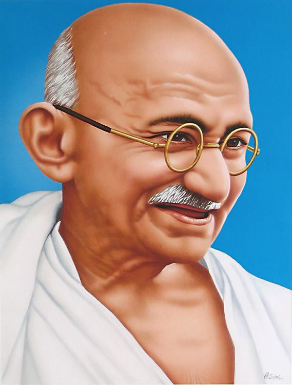
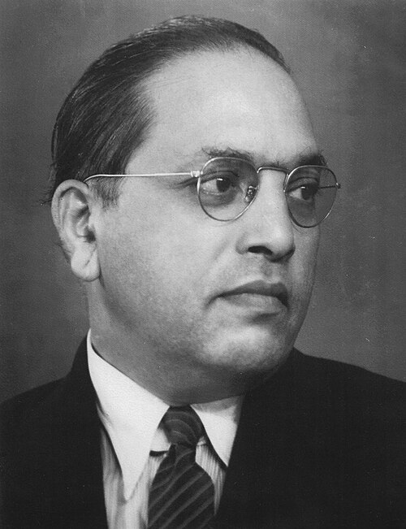
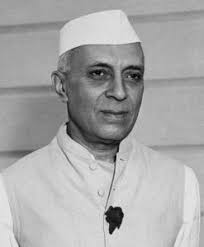
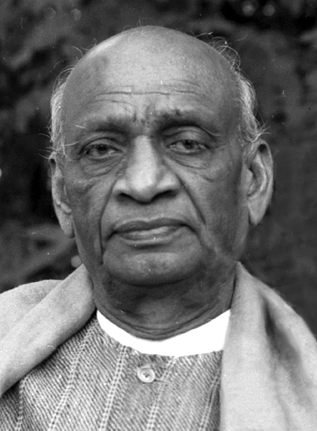

Those Who Made India Free
"The nation which forgets its defenders will itself be forgotten." — Calvin Coolidge
Click any card to read the full story of their sacrifice and contribution.

"A nation's culture resides in the hearts and in the soul of its people."
— Mahatma Gandhi

As Chairman of the Drafting Committee, Dr. Ambedkar personally drafted most of the Constitution. He fought to include Fundamental Rights, abolish untouchability, and enshrine equality for all citizens.

As India's first PM and key Constituent Assembly member, Nehru moved the famous "Objectives Resolution" that became the basis of the Preamble. He championed secularism and democracy.

The "Iron Man of India" unified over 560 princely states into the Indian Union, making a united republic possible. He also chaired the Advisory Committee on Fundamental Rights.